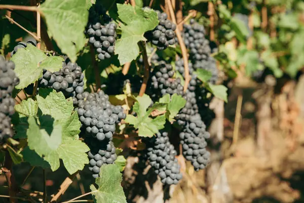

Pinot Noir grape

Photo: Molly Bailey on Unsplash
Pinot Noir is a red grape known for red cherry, earth, mushroom. Its best-known homes are Burgundy, Oregon, New Zealand.
Origin and history
An ancient Burgundian grape, grown there for at least 1,000 years by Cistercian monks among others.
Where it grows
Burgundy, Champagne, Germany, Oregon's Willamette Valley, Sonoma Coast, Central Otago, Martinborough, Yarra Valley and Tasmania.
Structure
Light to medium body, low to medium tannin, high acidity. Thin skins make it pale, delicate and hard to grow.
Aromas, young and aged
Young: red cherry, raspberry, strawberry and violet. With age: forest floor, mushroom, game and sweet spice.
Ageing
Village wines 3–8 years; Burgundy Grands Crus can improve for 15–30 years.
Also known as
Spätburgunder (Germany), Pinot Nero (Italy), Blauburgunder (Austria).
Good to know
Also one of the three main Champagne grapes, giving body and red-fruit character to sparkling wine.
Wine regions for Pinot Noir
Pinot Noir wines to try
Real bottles from The Wine Library.
Louis Jadot Bourgogne Pinot Noir Couvent des Jacobins
Burgundy · Bourgogne · Pinot Noir
Light and fresh: red cherry, raspberry and a hint of earth.
Food: Roast chicken, mushroom dishes
Domaine de la Romanée-Conti Romanée-Conti Grand Cru
Burgundy · Vosne-Romanée · Pinot Noir
One of the world's most sought-after wines: rose, spice, red fruit and great length.
Food: Roast pigeon, truffle dishes
Domaine Drouhin Oregon Pinot Noir Dundee Hills
Willamette Valley · Dundee Hills · Pinot Noir
Graceful Oregon Pinot: red cherry, raspberry and gentle spice.
Food: Salmon, duck
Felton Road Pinot Noir Bannockburn
Central Otago · Bannockburn · Pinot Noir
Vivid Pinot: dark cherry, plum, thyme and silky texture.
Food: Lamb, duck
Bodega Chacra Barda Pinot Noir
Patagonia (Argentina) · Río Negro · Pinot Noir
Light and silky: red cherry, raspberry, earth and bright acidity.
Food: Salmon, duck, mushroom dishes
Cave Geisse Brut
Serra Gaúcha · Pinto Bandeira · Chardonnay, Pinot Noir
Traditional-method Brazilian fizz: green apple, citrus and toasty brioche.
Food: Canapés, fried snacks, sushi
Louis Pommery England Brut
Hampshire · English Sparkling Wine · Chardonnay, Pinot Noir, Pinot Meunier
Pommery's English sparkling: crisp green apple, citrus and a fine chalky finish.
Food: Oysters, fish and chips
Louis Pommery England Brut Rosé
Hampshire · English Sparkling Wine · Pinot Noir, Chardonnay, Pinot Meunier
Bright red berries and fresh acidity in a delicate English pink fizz.
Food: Smoked salmon, strawberries
Rathfinny Wine Estate Blanc de Noirs Brut
Sussex · Pinot Noir, Pinot Meunier
Richer Sussex fizz from black grapes: red apple, redcurrant and toast.
Food: Roast chicken, charcuterie
Nyetimber 1086 Rosé Prestige Cuvée
Sussex · English Sparkling Wine · Pinot Noir, Chardonnay
Nyetimber's flagship rosé: wild strawberry, rose petal and long lees-aged depth.
Food: Duck breast, salmon
Renegade Urban Winery Calvin White Pinot Noir
London · English Wine · Pinot Noir
A white wine pressed from Essex Pinot Noir: red apple, peach and a hint of berry.
Food: Crab cakes, chicken
Davenport Diamond Fields Pinot Noir
Kent · English Wine · Pinot Noir
Organic Kent Pinot Noir: light, pure redcurrant and cherry with fine tannin.
Food: Duck, mushrooms
Wiston Estate Twenty-Six Pinot Noir
Sussex · South Downs · Pinot Noir
Elegant South Downs Pinot Noir: red cherry, raspberry and gentle spice.
Food: Roast pheasant, salmon
Simpsons Wine Estate Q Class Pinot Noir
Kent · English Wine · Pinot Noir
Kent Pinot Noir from chalk: silky red fruit and fine structure.
Food: Roast duck, lamb
Digby Fine English Reserve Brut Rosé
Sussex · English Sparkling Wine · Pinot Noir, Chardonnay, Pinot Meunier
Mature English rosé fizz: red fruit, toast and a long dry finish.
Food: Lobster, game terrine
Cloudy Bay Pelorus Rosé
Marlborough · Pinot Noir, Chardonnay
Traditional-method New Zealand rosé: strawberry, cream and fine bubbles.
Food: Prawns, summer berries
Pommery Brut Royal
Champagne · Chardonnay, Pinot Noir, Pinot Meunier
Fresh, Chardonnay-led house style: citrus, white flowers and a light, crisp finish.
Food: Oysters, canapés
Pommery Brut Apanage 1874
Champagne · Chardonnay, Pinot Noir, Pinot Meunier
A rounder, more gastronomic Pommery: ripe pear, brioche and hazelnut.
Food: Poultry, white fish
Pommery Brut Rosé Royal
Champagne · Pinot Noir, Chardonnay, Pinot Meunier
Delicate pink Pommery with red berries and a crisp, dry finish.
Food: Salmon, red berries
Pommery Apanage Brut Rosé
Champagne · Pinot Noir, Chardonnay, Pinot Meunier
Fuller rosé with wild strawberry, citrus peel and gentle toast.
Food: Duck, tuna
Pommery Grand Cru Brut
Champagne · Chardonnay, Pinot Noir
Vintage blend from grand cru villages only: depth, toast and fine acidity.
Food: Lobster, chicken in cream
Pommery Cuvée Louise
Champagne · Chardonnay, Pinot Noir
Pommery's prestige cuvée: refined, layered, with honey, almond and long minerality.
Food: Langoustine, caviar
A. Levasseur Extrait Gourmand
Champagne · Pinot Meunier, Chardonnay, Pinot Noir
Grower Champagne from the Marne: generous, fruity and gently toasty.
Food: Gougères, chicken
Charles Heidsieck Rosé Réserve
Champagne · Pinot Noir, Chardonnay, Pinot Meunier
Vinous rosé with red fruit, spice and toasty reserve wines.
Food: Duck, lamb
Laurent-Perrier La Cuvée Brut
Champagne · Chardonnay, Pinot Noir, Pinot Meunier
Light, Chardonnay-rich house style: citrus, white peach and finesse.
Food: Aperitif, oysters
Devaux Cuvée D Rosé
Champagne · Pinot Noir, Chardonnay
Côte des Bar rosé with ripe red berries, spice and a long finish.
Food: Salmon, charcuterie
Ayala Rosé Majeur
Champagne · Chardonnay, Pinot Noir, Pinot Meunier
Fresh, low-dosage rosé: redcurrant, citrus and a crisp, dry finish.
Food: Sushi, prawns
Gosset Grand Rosé Brut
Champagne · Chardonnay, Pinot Noir
Fresh, fruit-driven rosé from Aÿ's oldest house: strawberry and citrus.
Food: Salmon, red fruit desserts
Gosset Celebris Rosé Extra Brut
Champagne · Chardonnay, Pinot Noir
Gosset's prestige rosé: dry, complex, with dried red fruit and spice.
Food: Pigeon, lobster
Moët & Chandon Rosé Impérial
Champagne · Pinot Noir, Pinot Meunier, Chardonnay
Bright, fruity rosé: wild strawberry, cherry and a soft mousse.
Food: Salmon, berries
Moët & Chandon Grand Vintage
Champagne · Chardonnay, Pinot Noir, Pinot Meunier
The vintage Moët: riper fruit, toast and more depth than the NV.
Food: Chicken, scallops
Bollinger Rosé Brut
Champagne · Pinot Noir, Chardonnay, Pinot Meunier
Pinot-rich, vinous rosé with red fruit, spice and Bollinger's toasty depth.
Food: Duck, salmon
Bollinger PN (Pinot Noir series)
Blanc de Noirs from a named Pinot Noir village each edition (TX, VZ, AYC): powerful and vinous.
Food: Roast chicken, veal
Bollinger La Grande Année
Champagne · Pinot Noir, Chardonnay
Barrel-fermented vintage Bollinger: rich, nutty, toasty and long.
Food: Lobster, truffle
Bollinger R.D. Extra Brut
Champagne · Pinot Noir, Chardonnay
Recently disgorged Grande Année, aged long on lees: deep, complex and dry.
Food: Caviar, aged Comté
Bollinger La Côte aux Enfants Rouge
Champagne · Coteaux Champenois · Pinot Noir
Rare still red Pinot Noir from a single Aÿ slope: fine, red-fruited and silky.
Food: Roast quail, salmon
Perrier-Jouët Blason Rosé
Champagne · Pinot Noir, Pinot Meunier, Chardonnay
Floral, fruity rosé with red berries and a delicate texture.
Food: Salmon, prawns
Perrier-Jouët Belle Époque
Champagne · Chardonnay, Pinot Noir
Floral, finely balanced prestige cuvée in the famous anemone bottle.
Food: Langoustine, sole
Perrier-Jouët Belle Époque Rosé
Champagne · Chardonnay, Pinot Noir, Pinot Meunier
Elegant prestige rosé: red berries, citrus and white flowers.
Food: Lobster, duck
Armand de Brignac Ace of Spades Brut Rosé
Champagne · Pinot Noir, Pinot Meunier, Chardonnay
Opulent rosé in the metal-clad bottle: ripe red fruit and a creamy finish.
Food: Celebrations, red fruit
Louis Roederer Vintage Brut
Champagne · Pinot Noir, Chardonnay
Pinot-led vintage Roederer: ripe, structured and toasty.
Food: Poultry, veal
Louis Roederer Vintage Rosé
Champagne · Pinot Noir, Chardonnay
Vintage rosé from Cumières Pinot: delicate red fruit and freshness.
Food: Salmon, duck
Louis Roederer Cristal
Champagne · Pinot Noir, Chardonnay
Roederer's prestige cuvée: pure, precise, layered and very long.
Food: Caviar, langoustine
Louis Roederer Cristal Rosé
Champagne · Pinot Noir, Chardonnay
The rare pink Cristal: silky red fruit, citrus and remarkable finesse.
Food: Lobster, pigeon
Henriot Brut Souverain
Champagne · Chardonnay, Pinot Noir, Pinot Meunier
Chardonnay-led house blend: citrus, white flowers and brioche.
Food: Aperitif, oysters
Henriot Brut Rosé Millésimé
Champagne · Pinot Noir, Chardonnay
Vintage rosé with red fruit, citrus and mature toast.
Food: Duck, salmon
Taittinger Comtes de Champagne Rosé
Champagne · Pinot Noir, Chardonnay
Taittinger's prestige rosé: intense red fruit, spice and silky texture.
Food: Lamb, lobster
Veuve Clicquot La Grande Dame Rosé
Champagne · Pinot Noir, Chardonnay
Pinot-dominated prestige rosé: deep red fruit and toasty complexity.
Food: Duck, venison
Billecart-Salmon Brut Rosé
Champagne · Chardonnay, Pinot Noir, Pinot Meunier
Pale, elegant classic rosé: strawberry, citrus and fine bubbles.
Food: Salmon, sushi
Billecart-Salmon Cuvée Nicolas François
Champagne · Pinot Noir, Chardonnay
Billecart's prestige vintage: structured, toasty and long-lived.
Food: Turbot, poultry
Dom Pérignon Brut
Champagne · Chardonnay, Pinot Noir
Moët's prestige vintage only: smoky, toasty, creamy and very long.
Food: Caviar, scallops
Krug Rosé
Champagne · Pinot Noir, Chardonnay, Pinot Meunier
Deep, spicy rosé with Krug's richness: red fruit, citrus peel and toast.
Food: Lamb, tuna
Akitu Pinot Noir Blanc
White wine from Pinot Noir: red apple, citrus and texture.
Food: Salmon, chicken
Louis Jadot Bourgogne Côte d'Or Pinot Noir
Burgundy · Bourgogne Côte d'Or · Pinot Noir
Fresh, cherry-scented red Burgundy from Côte d'Or vines.
Food: Chicken, salmon
Domaine Georges Joillot Bourgogne Rouge
Burgundy · Bourgogne · Pinot Noir
Pommard grower's Bourgogne: red fruit and gentle structure.
Food: Charcuterie, chicken
Domaine René Bouvier Gevrey-Chambertin
Burgundy · Gevrey-Chambertin · Pinot Noir
Firm, dark-fruited village Gevrey.
Food: Beef, game
Domaine Dugat-Py Gevrey-Chambertin 1er Cru Lavaux Saint-Jacques
Burgundy · Gevrey-Chambertin · Pinot Noir
Concentrated, old-vine Gevrey premier cru from a cult grower.
Food: Venison, beef
Domaine de la Romanée-Conti Romanée-Saint-Vivant Grand Cru
Burgundy · Romanée-Saint-Vivant · Pinot Noir
DRC grand cru: ethereal, spicy, silky and very long.
Food: Pigeon, truffle
Domaine Philippe Livera Côte de Nuits-Villages
Burgundy · Côte de Nuits-Villages · Pinot Noir
Juicy, dark-cherry Côte de Nuits red.
Food: Duck, mushrooms
Philippe Gavignet Nuits-Saint-Georges Vieilles Vignes
Burgundy · Nuits-Saint-Georges · Pinot Noir
Old-vine Nuits: dark cherry, earth and firm tannins.
Food: Beef bourguignon
Fernand & Laurent Pillot Volnay
Burgundy · Volnay · Pinot Noir
Fragrant, silky Volnay: red cherry and violet.
Food: Duck, roast chicken
Louis Jadot Volnay 1er Cru Clos de la Barre
Burgundy · Volnay · Pinot Noir
Monopole Volnay premier cru: elegant and finely structured.
Food: Veal, game birds
Domaine Ballot-Millot Pommard 1er Cru Pézerolles
Burgundy · Pommard · Pinot Noir
Pommard premier cru: dark fruit, spice and firm grip.
Food: Beef, lamb
Domaine Georges Joillot Pommard Les Noizons
Burgundy · Pommard · Pinot Noir
Village Pommard lieu-dit: sturdy and red-fruited.
Food: Beef, mushrooms
P. & M. Jacqueson Rully Les Chaponnières
Burgundy · Rully · Pinot Noir
Bright Côte Chalonnaise Pinot Noir.
Food: Charcuterie, chicken
Domaine Chanson Mercurey Rouge
Burgundy · Mercurey · Pinot Noir
Firm, cherry-fruited Mercurey.
Food: Pork, poultry
Paringa Estate Peninsula Pinot Noir
Mornington Peninsula · Pinot Noir
Bright, cherry-fruited Mornington Pinot.
Food: Duck, salmon
Ata Rangi McCrone Vineyard Pinot Noir
Single-vineyard Ata Rangi: perfumed and fine.
Food: Lamb, mushrooms
Restless River Pinot Noir
Hemel-en-Aarde · Hemel-en-Aarde Valley · Pinot Noir
Cool-climate Pinot: red fruit and savoury depth.
Food: Duck, salmon
Hamilton Russell Vineyards Pinot Noir
Hemel-en-Aarde · Hemel-en-Aarde Valley · Pinot Noir
South Africa's benchmark Pinot: elegant and earthy.
Food: Duck, mushrooms
Camel Valley Camel Valley Brut
Cornwall · Seyval Blanc, Reichensteiner, Pinot Noir
Lively Cornish fizz, crisp apple, hedgerow flowers and a fine, refreshing mousse.
Food: Fish and chips, oysters, crab sandwiches
Denbies Wine Estate Greenfields Cuvée
Surrey · Surrey Hills · Chardonnay, Pinot Noir, Pinot Meunier
Traditional-method English sparkling with green apple, brioche and bright acidity.
Food: Smoked salmon, canapés, soft cheese
Langham Wine Estate Culver Classic Cuvée
Dorset · Chardonnay, Pinot Noir, Pinot Meunier
Chalk-grown Dorset fizz, citrus, red apple and toasty depth with a long finish.
Food: Shellfish, fish pie, aged cheddar
Haute Cabrière Pierre Jourdan Brut
Franschhoek · Chardonnay, Pinot Noir
Cap Classique with lemon, green apple and gentle biscuit, crisp and elegant.
Food: Oysters, sushi, fried snacks
Danbury Ridge Pinot Noir
Essex · Crouch Valley · Pinot Noir
One of England's finest still reds: pure cherry, red berries and silky, delicate tannins.
Food: Roast duck, mushroom risotto, salmon
Lyme Bay Winery Classic Cuvée
Devon · Chardonnay, Pinot Noir, Pinot Meunier
Traditional-method English fizz with green apple, brioche and fine, lively bubbles.
Food: Smoked salmon, crab sandwiches, fish and chips
Cristom Mt. Jefferson Cuvée Pinot Noir
Willamette Valley · Eola-Amity Hills · Pinot Noir
Bright raspberry and dark cherry lifted by forest-floor notes and a cool, wind-sharpened freshness.
Food: Cedar-plank salmon
Quails' Gate Pinot Noir
Red cherry and cranberry with a gentle smoky, savoury edge and silky tannins from lakeside vineyards.
Food: Duck breast with cherry jus
Miolo Cuvée Tradition Brut
Serra Gaúcha · Vale dos Vinhedos · Chardonnay, Pinot Noir
Traditional-method fizz with green apple, brioche and a fine, persistent mousse; Brazil's sparkling calling card.
Food: Pão de queijo and cured ham
Casa Valduga 130 Brut
Serra Gaúcha · Chardonnay, Pinot Noir
Traditional-method Brazilian fizz: green apple, toasted brioche and a fine, creamy mousse.
Food: Fried snacks, prawn tempura
Bellavista Alma Grande Cuvée Brut
Lombardy · Franciacorta · Chardonnay, Pinot Noir, Pinot Blanc
Elegant Franciacorta with white flowers, lemon curd and toasted hazelnut over a fine bead.
Food: Risotto alla milanese, fritto misto
Hattingley Valley Classic Reserve
Hampshire · English Sparkling Wine · Chardonnay, Pinot Noir, Pinot Meunier
Crisp Hampshire blend with baked apple, citrus and a soft, nutty richness from some oak-fermented wine.
Food: Fish and chips, Comté
Similar red grapes
Explore all grapes in the interactive guide
The Wine Reference newsletter
New wines, stories and career guides, one email a week at most.
Over 18s only. Unsubscribe any time with one click. Your email is stored securely by Kit and never shared.
Support The Wine Reference
This guide is free, with no paywall. If it helped you choose a bottle, you can buy me a glass and keep it growing.
🍷 Buy me a glass